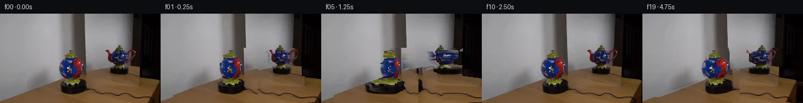

![首帧]()

Round 00
2026-11-06T01:46:44.479005+00:00像素候选变化代码 +258/−0inspection 更新
pixels 512d61459bf15d5c · code abe28e6af5ac51df
查看本轮 generate.py 真实 diff
--- previous/generate.py
+++ current/generate.py
@@ -0,0 +1,258 @@
+"""
+PixelWorld-Text generation: Teapot rotating clockwise on black platform
+in front of a mirror. 20 frames, 256x144, 4fps.
+Frame 00 = exact copy of first_frame.png.
+Method: Foreground segmentation + cylindrical column-warp rotation
+ with mirror-plane optics.
+"""
+import numpy as np
+from PIL import Image
+from pathlib import Path
+import sys
+
+sys.path.insert(0, str(Path(__file__).parent))
+from artifact_io import save
+
+# ── Configuration ──────────────────────────────────────────────────
+H, W = 144, 256
+N_FRAMES = 20
+MIRROR_X = 155 # mirror plane column (vertical)
+FPS = 4
+
+# ── Load first frame ──────────────────────────────────────────────
+first = np.array(Image.open("first_frame.png")).astype(np.uint8)
+assert first.shape == (H, W, 3), f"Expected (144,256,3), got {first.shape}"
+
+# ── Build foreground mask ─────────────────────────────────────────
+# Warm-toned pixels define the teapot + mirror reflection
+rg = first[:,:,0].astype(np.int16) - first[:,:,1].astype(np.int16)
+rb = first[:,:,0].astype(np.int16) - first[:,:,2].astype(np.int16)
+fg_mask = (rg > 12) & (rb > 12)
+
+# Also include pixels that are part of the connected teapot body
+# (darker warm tones at the edges)
+fg_mask2 = (rg > 5) & (rb > 5) & (first[:,:,0] > 25)
+fg_mask = fg_mask | fg_mask2
+
+# Dilate mask to capture full object including edges
+from scipy.ndimage import binary_dilation, binary_erosion, binary_closing
+fg_mask = binary_closing(fg_mask, structure=np.ones((3,3)), iterations=2)
+fg_mask = binary_dilation(fg_mask, structure=np.ones((3,3)), iterations=2)
+
+# Restrict to the object region (rows where teapot exists)
+fg_mask[:55, :] = False # above teapot top
+fg_mask[143:, :] = False # below image
+
+# Ensure mask doesn't extend into pure background areas on far left
+# by checking distance from warm regions
+fg_mask[:, :20] = False
+
+# ── Build background (without foreground) ─────────────────────────
+bg = first.copy().astype(np.float64)
+fg_float = fg_mask.astype(np.float64)
+
+# Inpaint: horizontal fill from left and right neighbors
+for y in range(H):
+ row_fg = np.where(fg_mask[y])[0]
+ if len(row_fg) == 0:
+ continue
+ # For each foreground pixel, use nearest non-foreground pixel in same row
+ row_bg = np.where(~fg_mask[y])[0]
+ if len(row_bg) == 0:
+ continue
+
+ fg_cols = row_fg.copy()
+ for x in fg_cols:
+ # Find nearest non-fg pixel to left
+ left = row_bg[row_bg < x]
+ right = row_bg[row_bg > x]
+ if len(left) > 0 and len(right) > 0:
+ # Interpolate between left and right background
+ lx = left[-1]
+ rx = right[0]
+ t = (x - lx) / (rx - lx)
+ bg[y, x] = bg[y, lx] * (1-t) + bg[y, rx] * t
+ elif len(left) > 0:
+ bg[y, x] = bg[y, left[-1]]
+ elif len(right) > 0:
+ bg[y, x] = bg[y, right[0]]
+
+bg = np.clip(bg, 0, 255).astype(np.uint8)
+
+# ── Prepare foreground data ───────────────────────────────────────
+# We'll manipulate the original frame's foreground pixels
+orig = first.copy().astype(np.float64)
+
+# ── Generate frames ───────────────────────────────────────────────
+frames = []
… diff truncated; 171 more lines …